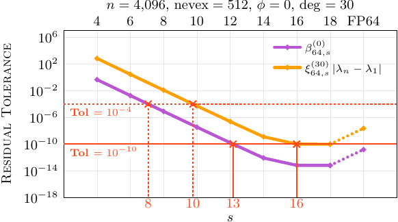
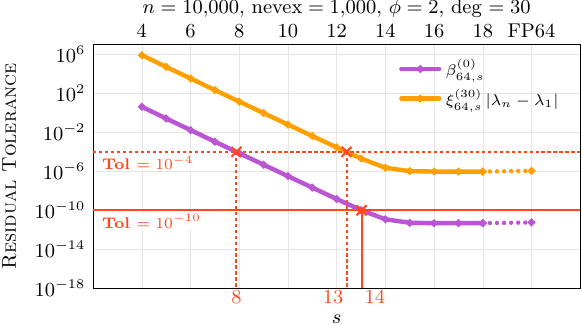

7. Enabling GEMM emulation in ChASE
On NVIDIA GPUs, ChASE can replace the matrix products inside the filter by an emulated GEMM via the Ozaki-II scheme. Experiments report an excellent speed-up of ChASE with emulation on NVIDIA H100 GPUs and newer. When the arithmetic intensity is high enough, that speed-up reaches a factor of 2 or more.
7.1. Emulation with GEMMul8
GEMMul8, from RIKEN R-CCS, implements the Ozaki-II scheme. The product is split into \(s\) INT8 slices, one per coprime modulus, and those slices are summed back into the working precision. A larger \(s\) costs more time and gives a tighter error.
This path is available in the GPU builds. The CPU builds keep the ordinary GEMM.
7.1.1. Configure
Turn emulation on when you configure ChASE, where CHASE_OZAKI_BACKEND defaults to GEMMUL8:
cmake .. -DCHASE_ENABLE_OZAKI=ON
7.1.2. Fetching GEMMul8
With GEMMUL8_ROOT left empty, ChASE downloads GEMMul8 on its own.
CHASE_FETCH_GEMMUL8 is on by default. The first configure clones tag
v3.4.4 from https://github.com/RIKEN-RCCS/GEMMul8.git into the build
tree and compiles the GEMM-only INT8 library. A later configure reuses that
clone when the tag is unchanged.
To use a GEMMul8 you already built, point ChASE at its prefix. The prefix
must contain include/gemmul8.hpp and lib/libgemmul8.so (or
lib64/libgemmul8.so):
cmake .. -DCHASE_ENABLE_OZAKI=ON -DGEMMUL8_ROOT=/path/to/GEMMul8
The same prefix is read from the environment variable GEMMUL8_ROOT when
the CMake variable is empty.
7.1.3. Runtime controls
These variables are read when a solve starts. Changing them does not require a rebuild.
CHASE_DISABLE_OZAKISet to
1to skip emulation and use the ordinary GEMM for that run.CHASE_OZAKI_NUM_MODULIFix \(s\), the number of coprime moduli, for the whole solve.
CHASE_OZAKI_WORKSPACE_GBDevice workspace GEMMul8 may use. Memory saving is a GEMMul8 feature: it reduces the memory cost by paneling the Ozaki-II algorithm, so the product runs in several passes inside a workspace cap.
Unset: the cap is 12 GiB, and memory saving is on.
A positive number, for example
8: the cap is 8 GiB, and memory saving stays on.MAX: ChASE allocates the full workspace for the \(s\) of this solve, and memory saving is off.
If that allocation fails, ChASE logs the CUDA error and continues the solve with the ordinary GEMM.
CHASE_OZAKI_FPGEMM_FALLBACKUsed by the flexible mode described below. Set to
1to allow a switch to the ordinary double-precision GEMM when at least one residual stagnation is detected and no \(s\) satisfies the conservative bound (see below).
Build with -DCHASE_OUTPUT=ON to print \(s\), the workspace size, and
whether memory saving is on.
7.1.4. Flexible mode for double-precision Hermitian matrices
For a double-precision Hermitian eigenproblem, a flexible accuracy based on
the prescribed tolerance is enabled by default, unless CHASE_OZAKI_NUM_MODULI
is set. ChASE keeps the smallest \(s\) in 7 to 16 whose loose bound
is below the solver tolerance:
The advantage is that the filter FLOP/s then follows the accuracy you request. For an intermediate tolerance, FP64 or \(s = 16\) is not always the best choice.
\(\beta^{(0)}_{s}\) bounds the error of one emulated product on the initial vectors, for a sequential real matrix. With \(\bar{A} = (A - cI)/e\) and \(\mathcal{P}_s\) the product of the \(s\) moduli,
where \(t_s = 1/\sqrt{32(\mathcal{P}_s - 1)}\). The exponents \(\alpha'\) and \(\beta'\) are the Ozaki-II scalings of \(\bar{A}\) and of the initial subspace \(V^{(0)}\), and \(r_s\) is the accumulation term for that \(s\). This formula is derived from the error analysis in Error Analysis of Matrix Multiplication Emulation Using Ozaki-II Scheme. In parallel, the FP64 reduction error is assumed exact. In the complex case, \(\beta^{(0)}_{s}\) is multiplied by 2 to account for the imaginary part (see Section 4 of The 2M Multiplication Algorithm for Complex Matrices). Theoretical work is under way to validate these assumptions.
ChASE also stores a second value of \(s\): the smallest one whose propagated residual, the conservative bound, is below the solver tolerance. The conservative bound is
where \(\mathrm{deg}\) is the degree of the filter and
The scale \(\eta\) is the Chebyshev polynomial of the first kind, evaluated at the left end of the filtered interval. Here \(\mu_n\) is an estimation of \(\lambda_n\) and \(\mu_{\mathrm{nevex}}\) is an estimation of \(\lambda_{\mathrm{nevex}}\). Both are estimated before the ChASE iteration by a cheap Lanczos run.
If at least one residual stagnation is detected and an \(s\) meets the
conservative bound, ChASE moves to that \(s\). If no \(s\) meets the
conservative bound, the fallback is \(s = 16\).
Set CHASE_OZAKI_FPGEMM_FALLBACK=1 to use the ordinary double-precision GEMM
instead of that fallback.
The loose bound and the conservative bound are upper bounds on the emulation error. An \(s\) that falls under the tolerance therefore comes with a guarantee. ChASE can still converge even though these estimators provide no theoretical guarantee when no \(s\) falls under the tolerance.
 |
 |


The parameter \(\phi\) controls the dynamic range of the matrices, so \(\phi = 0\) is an easier matrix than \(\phi = 2\). The matrix size also affects the bounds, and the right-hand figure is the more difficult case: a larger matrix together with \(\phi = 2\).
On the left, \(\phi = 0\). For \(\mathrm{tol} = 10^{-4}\) the loose
bound selects \(s = 8\) and the conservative bound selects \(s = 10\).
For \(\mathrm{tol} = 10^{-10}\) they select \(s = 13\) and
\(s = 16\). On the right, the loose bound still selects \(s = 8\) and
\(s = 13\) for those two tolerances. For \(\mathrm{tol} = 10^{-10}\),
no \(s\) meets the conservative bound, so the fallback \(s = 16\) is
activated, or the ordinary double-precision GEMM when
CHASE_OZAKI_FPGEMM_FALLBACK=1.
The search is limited to double-precision Hermitian matrices. A single-precision
solve stays at \(s = 12\). A pseudo-Hermitian solve stays at
\(s = 16\) in double precision and at \(s = 12\) in single precision.
Setting CHASE_OZAKI_NUM_MODULI also turns the search off and uses the
\(s\) you gave, for any of these problems.
With -DCHASE_OUTPUT=ON, the flexible mode prints the error bound at each
\(s\) next to the settings above. For \(n = 10000\), \(\phi = 0\),
and \(\mathrm{tol} = 10^{-8}\) the print is
+-----------------+-----------+
| boost_moduli | 12 |
| safe_moduli | 15 |
| fp64_fallback | OFF |
| oz16_fallback | OFF |
| save_memory | ON |
| workspace | 12.00 GiB |
+-----------------+-----------+
+------------+----------+----------+----------+----------+----------+----------+----------+----------+----------+----------+----------+
| num_moduli | 7 | 8 | 9 | 10 | 11 | 12 | 13 | 14 | 15 | 16 | FP64 |
+------------+----------+----------+----------+----------+----------+----------+----------+----------+----------+----------+----------+
| ||E^f|| < | 5.95e-04 | 3.90e-05 | 2.58e-06 | 1.71e-07 | 1.15e-08 | 7.78e-10 | 5.39e-11 | 4.19e-12 | 6.69e-13 | 4.18e-13 | 4.33e-11 |
| ||E^p|| < | 2.12e-02 | 1.39e-03 | 9.18e-05 | 6.09e-06 | 4.08e-07 | 2.77e-08 | 1.92e-09 | 1.49e-10 | 2.38e-11 | 1.49e-11 | 1.54e-09 |
| Safe Res < | 2.16e+00 | 1.42e-01 | 9.36e-03 | 6.21e-04 | 4.16e-05 | 2.82e-06 | 1.96e-07 | 1.52e-08 | 2.43e-09 | 1.52e-09 | 1.57e-07 |
+------------+----------+----------+----------+----------+----------+----------+----------+----------+----------+----------+----------+
boost_moduli is the loose bound \(\|E^{f}\|\): the smallest
\(s\) under \(10^{-8}\) is 12. safe_moduli is the conservative
bound, the Safe Res row: the smallest \(s\) under that tolerance is 15.
Both fallbacks stay off because the conservative bound is satisfied. For
\(\mathrm{tol} = 10^{-10}\), no \(s\) satisfies the conservative
bound, so oz16_fallback is ON and fp64_fallback is OFF. Setting
CHASE_OZAKI_FPGEMM_FALLBACK=1 turns fp64_fallback ON and
oz16_fallback OFF instead.
Extending the flexible-accuracy mode to the pseudo-Hermitian case, and to single precision, is a topic of further research.
7.2. Emulation with cuBLAS
CUDA 13.5 and newer ship a cuBLAS mode that emulates a double-precision GEMM with fixed-point arithmetic. ChASE can use that mode for the filter products. The accuracy knob is the number of mantissa bits, which replaces the coprime moduli count \(s\) of GEMMul8. This backend uses the CUDA toolkit and does not build GEMMul8.
7.2.1. Configure
The CUDA toolkit must be 13.5 or newer. Select the cuBLAS backend when you turn emulation on:
cmake .. -DCHASE_ENABLE_OZAKI=ON -DCHASE_OZAKI_BACKEND=CUBLAS
7.2.2. Runtime controls
These variables are read when a solve starts. Changing them does not require a rebuild.
CHASE_DISABLE_OZAKISet to
1to skip emulation and use the ordinary GEMM for that run.CHASE_CUBLAS_MANTISSA_BITSMantissa bits kept by the emulated product. Unset, this is 32.
CHASE_CUBLAS_MANTISSA_CONTROLfixedwhen unset: the product keeps the bit count fromCHASE_CUBLAS_MANTISSA_BITS.dynamic: cuBLAS computes the bit count at runtime so the emulated product is at least as accurate as double precision.CHASE_CUBLAS_EMULATION_STRATEGYeagerwhen unset: cuBLAS uses emulation whenever it can.performant: cuBLAS uses emulation only when that is faster.default: the cuBLAS default, which isperformantunless the environment variableCUBLAS_EMULATION_STRATEGYis set.CHASE_CUBLAS_WORKSPACE_MBDevice workspace for the emulated GEMM, in MiB. Unset, this is 64. If that allocation fails, ChASE continues the solve with the ordinary GEMM.
CHASE_CUBLAS_DISABLE_FALLBACKSet to
1to keep the emulated product after a residual stagnation. Unset, a stagnation switches that product to the ordinary double-precision GEMM.
The mantissa bit count stays at CHASE_CUBLAS_MANTISSA_BITS for the whole
solve. Choosing that count from the solver tolerance, as the flexible-accuracy
mode does for \(s\), is a topic of further research.